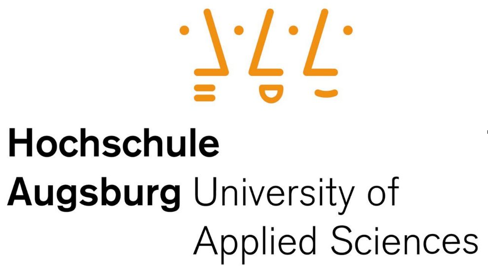

Zusammenfassung Embedded Linux SoSe 2015
Embedded Linux
Hochschule Augsburg
Fakultät für Informatik (Prof. Dr. Hubert Högl)
Studiengang Technische Informatik, 6. Semester
Sommersemester 2015
Datum: 2015-06-29 21:51
Matthias Pfitzmayer, <matthias.pfitzmayer@hs-augsburg.de>, #935691
Daniel Schneider, <daniel.schneider@hs-augsburg.de>, #
Matthias Struwe, <matthias.struwe@hs-augsburg.de>, #

Dieser Text steht unter der Creative Commons Lizenz
"Namensnennung/Keine kommerizelle Nutzung"
Zusammenfassung